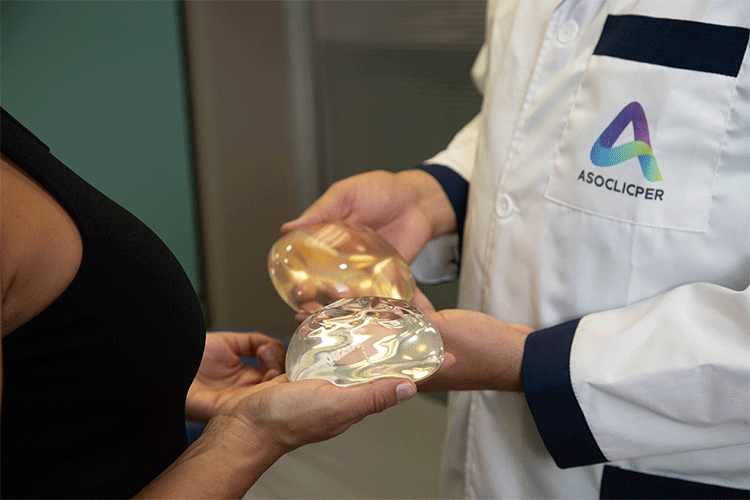

Tu seguridad en cirugía plástica es nuestra prioridad
Somos una comunidad de clínicas y cirujanos plásticos de todo el país, unidos por el propósito de impulsar y fortalecer las clínicas de cirugía plástica, estética y reconstructiva en Colombia. Velamos por la seguridad de los pacientes, garantizamos la calidad de la atención y humanizamos el servicio.

Cómo cuidamos cada etapa de tu proceso
Nos esforzamos por asegurar que cada persona que elige realizarse procedimientos de cirugía plástica y reconstructiva en Colombia lo haga con la confianza de estar en manos seguras y expertas.
¿Cómo reconocer una clínica que no da garantías?
Marca las situaciones que estás viendo en la clínica que estás evaluando. Cada señal se basa en las recomendaciones de la Asociación para una cirugía segura.
«Bajo el Bisturí»
Conversaciones sobre seguridad del paciente, excelencia médica y el futuro de la cirugía plástica en Colombia.
Elige a los profesionales y clínicas afiliadas a ASOCLICPER
Donde tu seguridad y bienestar siempre estarán en primer lugar. Explora también nuestra guía de turismo médico para tomar decisiones informadas.